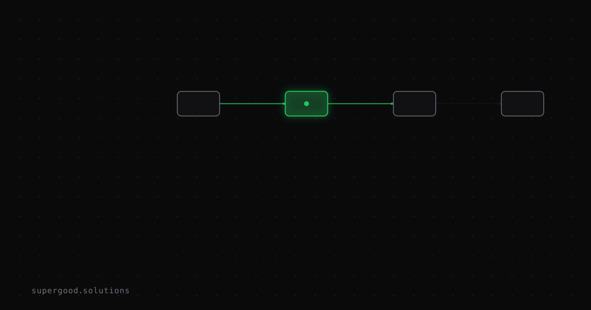

AI, Actually: What an LLM Is Actually Doing When It "Writes" Something
TL;DR: Your AI tool is not writing — it is guessing the next word, one word at a time, billions of times fast. That distinction isn't pedantic; it is the single most useful mental model for anyone building or using AI systems at work.
Key Insight
The word "write" is doing a lot of dishonest work in the AI industry right now.
When ChatGPT or Claude produces a response, it is not composing thoughts and expressing them. It is running a very specific mechanical process: given everything in front of it, predict the single most likely next chunk of text (a "token" — roughly a word or part of a word), output it, then repeat. That is the whole trick. No understanding, no intent, no authorship in any meaningful sense. Just: what comes next, statistically?
That sounds reductive, but it is actually the opposite of a knock on the technology. A model that has been trained on hundreds of billions of words has built up extremely sophisticated intuitions about what "comes next" in almost every context you can imagine — code, contracts, medical notes, marketing copy, philosophy. The predictions are so good, so contextually aware, that the output looks indistinguishable from intentional writing.
But "looks like" and "is" are not the same thing. Teams that confuse them build systems that fail in predictable ways.
Why Teams Miss This
The most common enterprise failure pattern is treating an LLM like a database or a calculator — as something that retrieves or computes a correct answer.
When you ask it "what is our refund policy," it does not look it up. It predicts what a plausible-sounding answer looks like, based on whatever context you gave it plus everything it learned during training. If you did not put the refund policy in the prompt, the model will confidently hallucinate one.
This is not a bug. It is the mechanism doing exactly what it was designed to do. The mechanism has no concept of "I don't know." It only has "what probably comes next."
Two other things that break when teams misunderstand the mechanism:
Prompt engineering becomes guesswork. If you think the model is "thinking about" your question, you'll write prompts that try to convince it. If you know it is predicting likely continuations, you'll write prompts that look like the beginning of the document you want — which is far more effective.
Evaluation becomes unreliable. Teams test their AI system by asking it questions and reading the answers. But fluent, confident output is the model's default — not a signal of accuracy. You need ground-truth comparison, not vibe checks.
How to Actually Do It
Mental model shift — write prompts as document openings, not questions.
Instead of:
What are best practices for onboarding new enterprise customers?Try:
Enterprise Customer Onboarding: Best Practices
The following is a structured guide for onboarding new enterprise accounts, based on common patterns in B2B SaaS companies. Key areas include:You are not asking a question. You are starting the document you want, and handing it off. The model's job is to continue it. That framing produces more structured, reliable output because you are working with the mechanism instead of against it.
For anything factual, retrieval is not optional.
If your use case requires accuracy — legal, financial, product specs, support policies — you need Retrieval-Augmented Generation (RAG). This means fetching the real source content and putting it in the prompt before the model generates anything. The model is still predicting tokens, but now the "what comes next" context includes your actual document, not just its training data.
RAG is not magic. It is the practical fix for what next-token prediction cannot do on its own: know things that are specific, current, or proprietary.
Temperature is a dial on randomness, not creativity.
Lower temperature (closer to 0) makes the model pick the highest-probability token almost every time — deterministic, consistent, great for structured extraction. Higher temperature introduces randomness — the model will occasionally pick lower-probability tokens, which produces more varied output. "Creative" is one possible result. "Nonsensical" is another. Set it deliberately, not by default.
What We've Learned
If your team is hitting AI reliability issues in production — hallucinations, inconsistent output, confident wrong answers — the root cause is almost always a mismatch between what the mechanism actually does and what the system was designed to expect.
Run this diagnostic: for each AI failure your team has hit in the last month, ask whether the failure makes total sense if the model is just predicting the next token. It usually does. That framing points directly at the fix.
The mechanism is not the ceiling. It is the foundation. Build on it correctly and it holds an enormous amount of weight. Build on a misunderstanding and the cracks show fast.
Sources
- How Do LLMs Work? Next-Token Prediction Explained — solid plain-language walkthrough of the token prediction loop
- The Art of Prediction: How LLMs Master Next-Token Generation — technical depth on decoding strategies and training objectives
- LLM Tokenization and Next-Token Prediction Explained — covers softmax probabilities, logits, and nucleus sampling without requiring a math degree
- Anthropic: Core Views on AI Safety — useful framing on what current models are and are not doing internally
Have a specific workflow in mind?
Bring it to a Quick Scan — a live working session where we'll tell you honestly whether it should be an agent, a workflow, or left alone, before you spend a dollar building it. You get 3 prioritized recommendations on the call, a one-page summary after, and the $500 credited toward any engagement within 30 days.
Get new posts + practical agent-ops notes
One email when something new goes up. No nurture sequence, no spam — unsubscribe whenever you want.